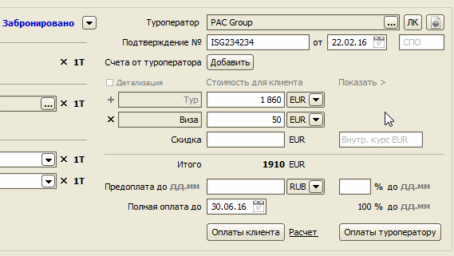
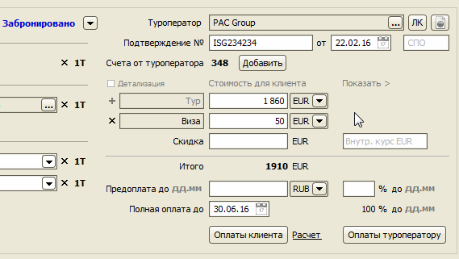

Счета от туроператоров
Регистрация счета от туроператора в заявке позволяет:
- иметь быстрый доступ к файлу счета,
- отслеживать сроки оплат туроператору,
- автоматически регистрировать факт оплаты туроператору при импорте банковской выписки.
При добавлении счета от туроператора можно прикрепить файл счета к заявке. Перетащите файл на форму или нажмите эту кнопку "Выбрать" и выберите файл. Если формат файла PDF или XLS, программа попытается автоматически определить номер, дату и сумму к оплате.

Добавленный счет появится на форме заявке. Цвет сигнализирует о текущем состоянии счета: зеленый - оплачен, красный - оплата просрочена. Нажатием на номер счета, откроется форма, с которой можно открыть на просмотр файл счета.

Остались вопросы? Напишите нам на e-mail